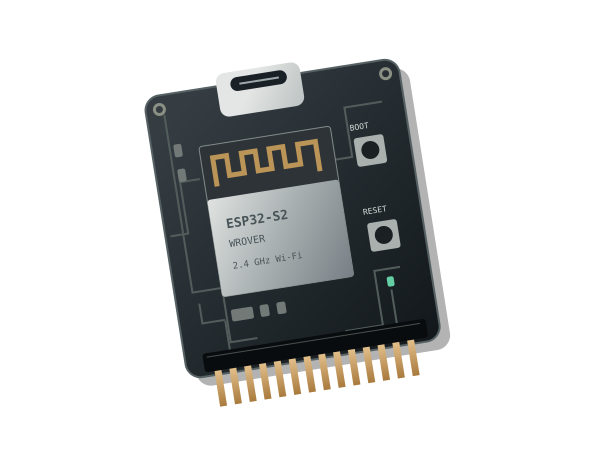

Wi-Fi Devboard & firmware
One accessory, several very different jobs. Learn which software runs where, recover a known setup, and turn Wi-Fi observations into evidence.
Follow the connection
Same board.
Different roles.

The computer controls the debugger. The board translates that connection into SWD, so you can pause the Flipper, inspect state and step through code. CMSIS-DAP is the USB-only alternative.
Concept diagram · Illustrations are not a wiring reference.
Meet the official board
The WiFi Devboard sold by Flipper Devices plugs into the top GPIO header. Its ESP32-S2-WROVER module is a separate computer with its own firmware. It has a USB-C socket and BOOT/RESET buttons. Start with GPIO basics; turn the Flipper off before attaching or removing the board, align the pins, then power it on.
| Property | What it means for a lab |
|---|---|
| 2.4 GHz, 802.11 b/g/n | Use a 2.4 GHz access point. A 5 GHz-only or 6 GHz-only network is outside this radio’s capability. |
| ESP32-S2 has no Bluetooth radio | Marauder’s Bluetooth features on other boards do not transfer to this one. The Flipper’s own BLE is separate. |
| Separate USB and GPIO paths | The board’s USB-C is used for board flashing. SWD connects a debug probe to the Flipper; UART carries serial data such as companion commands or logs. |
| No onboard microSD slot | PCAP storage depends on the board firmware, companion and storage configuration. A physical SD adapter is an additional hardware option. |
Stock board firmware makes it a development/debug probe; plugging it in does not automatically give every Flipper app internet access. A product called “Marauder Dev Board Pro” or an ESP32-S3 multiboard is different hardware, with different images and capabilities.
Sources: Flipper board overview, schematics, Espressif ESP32-S2 datasheet, connection guide, Marauder board/storage notes.
Three software layers to keep separate
- Flipper firmware: official firmware, Momentum, Unleashed or RogueMaster runs on the handheld. It provides the operating environment and app APIs. See the host firmware comparison.
-
Flipper companion app: a compatible
.fap, such as WiFi Marauder, provides controls on the handheld and talks to the board over UART. - Board firmware: an ESP32-S2 image runs on the accessory and performs its Wi-Fi or debug functions.
A bundled Marauder menu proves only that the companion exists. It does not establish what is flashed on the board. Changing the handheld’s firmware does not, by itself, replace the board image. Conversely, flashing Marauder replaces the board’s debugging application, not the Flipper’s operating system.
The companion’s upstream instructions describe builds for official and Unleashed release/dev channels. Match your actual firmware API or build the app against its SDK; a fork is not an automatic prerequisite. Record all three versions independently.
Choose the board’s job
| Choice | What it enables | What to verify |
|---|---|---|
| Official Black Magic / CMSIS-DAP | Flash and debug the Flipper: breakpoints, stepping, memory inspection. Black Magic debugging can use USB or Wi-Fi; CMSIS-DAP uses USB. | Debug mode must match the computer’s debugger configuration. UART logs are documented over USB. |
| ESP32 Marauder | Wi-Fi discovery, monitoring, capture and active security experiments. The feature set depends on hardware and release; see the mechanisms below. | Official-board target, compatible companion, channel and capture-storage path. Generic project Bluetooth claims do not apply to the S2. |
| Standalone Evil Portal | A local access point and web form; submitted values can be passed to the Flipper and saved. Useful for examining captive portals and phishing mechanics. | This project has its own board image, companion and page assets. It is distinct from Marauder’s integrated portal feature. |
| Your own ESP-IDF program | Build an ESP32-S2 application: a sensor endpoint, serial command interface, local web service or Wi-Fi measurement tool. | Correct chip target, USB/console settings, flash layout and the actual board pinout. ESP-IDF is a development framework, not a preconfigured Flipper companion. |
Choose by a task you can name. “I need a breakpoint” points to official board firmware; “I need to inspect my AP’s advertisements” points to a Wi-Fi tool; “I need my own network protocol” points to development. More menu entries do not establish compatibility, correctness or mastery.
What the security features actually do
These are technical mechanisms, including their offensive uses. A feature name is not proof that a particular target is vulnerable.
| Feature | Mechanism | Interpretation / defense |
|---|---|---|
| AP discovery | Read network advertisements; active scans also send probe requests. SSID is a network name, BSSID identifies an AP radio/interface, channel locates it, RSSI estimates received strength. | A familiar name is not authentication. RSSI is not a distance measurement. A scan labelled “scan” is not necessarily passive. |
| Sniffing / PCAP | Receive selected 802.11 frames and, where supported, export a packet capture for analysis. | One radio observes one channel at a time; hopping misses traffic. Capturing encrypted frames does not automatically reveal their contents. |
| EAPOL / PMKID capture | Collect authentication-related material. Suitable WPA2-Personal material can support offline password guesses on a computer. | The capture is not a plaintext password or a guaranteed recovery. Strong unique passphrases matter; WPA3-SAE changes this attack model. |
| Deauthentication / disassociation | Forge management frames to try to terminate a connection. This is active traffic injection and can cause denial of service. | Negotiated Protected Management Frames (PMF) protect relevant robust management frames. PMF is not a shield against all interference. |
| Beacon injection / spam | Broadcast advertisements for chosen network names, potentially crowding a device’s network list. | An advertised SSID does not prove a working AP or usable internet connection. Inventory and wireless monitoring help identify unexpected advertisements. |
| Evil twin / captive portal | An impostor AP can borrow a trusted name; a portal can ask users to submit secrets to an attacker-controlled page. | This exploits network identity and user trust; it does not decrypt WPA merely by displaying a form. Verify the network and web origin; do not enter unrelated account credentials into a Wi-Fi portal. |
Primary reading: Espressif scanning, PMF and WPA3, and Marauder’s EAPOL/PMKID, deauthentication, beacon injection and portal documentation.
Lab A: establish a recovery path and read logs
Prepare a computer, a data-capable USB cable and the official board. Back up your board configuration and useful lab files before replacing firmware; a flash or erase may remove them. Use the board worksheet to record versions, target, source and results.
-
Disconnect the board from the powered-off Flipper. Connect the board’s own USB-C to the computer. Enter its ROM bootloader: hold BOOT, press and release RESET, then release BOOT. Identify the newly enumerated serial port.
-
Install uFBT in a Python virtual environment, or reuse the one from Module 15. With that environment active, run
python -m ufbt devboard_flash. This writes the official board firmware. -
After a successful flash, press RESET and reconnect the cable. Follow the manufacturer’s recovery/update guide if it fails; first check bootloader mode, cable and port.
-
Cold-plug the board into the Flipper, power on, and connect the board’s USB to the computer. Set a useful Flipper log level. Use the UART/log port in a serial terminal at 230400 baud; the other interface may be the debugger. Open and close a benign app and record an observed log event.
# macOS / Linux, in a working folder on your computer
python3 -m venv .venv
source .venv/bin/activate
python -m pip install ufbt
# Only with the intended Wi-Fi board in bootloader mode:
python -m ufbt devboard_flash
On Windows, create the environment with
py -m venv .venv and activate
.venv\Scripts\Activate.ps1 in PowerShell; use the same
python -m commands afterward. Locate ports in Device
Manager; on macOS use ls /dev/cu.*, on Linux
ls /dev/ttyACM*.
Development extension: follow Flipper’s debugger setup, match source/build symbols to the target firmware, stop at a breakpoint, inspect a variable, then continue. A halted processor can look like a frozen device. Use USB initially; only expose a Wi-Fi debug service to your trusted lab network.
Sources: uFBT, board flashing, UART log setup and SWD debugging. The current log guide documents USB logging; do not assume Wi-Fi logging is available.
Lab B: install Marauder and measure your AP
-
Record the board model, Flipper firmware and companion version. From upstream Marauder releases, select the image identified for the Flipper Zero WiFi Dev Board. The current target table maps it to
_flipper.bin; do not choose Dev Board Pro, WROOM or multiboard S3 merely because the name says ESP32. -
Download the intended release and record its tag and checksum; compare a published checksum when supplied. Use an installer linked by upstream for that exact board. Enter BOOT/RESET mode through the board’s USB, verify the selected port and target, and follow that release’s image/offset layout. A full flash layout and an application-only update are different inputs; do not guess offsets from another board.
-
Reset the board, cold-plug it into the Flipper and install a compatible WiFi Marauder companion. Verify its startup/version response before starting any radio function. Use its AP-scan controls, or the CLI route below.
-
Configure your lab AP with the unique name
SignalPath-Lab, 2.4 GHz, a fixed locally permitted channel and no WAN connection. Predict the name/channel you should see. Start AP discovery briefly, stop it, and record only your AP’s result. Check the implementation before describing this as passive. -
Repeat three observations at a fixed position, then move the board to a second marked position and repeat. Keep orientation and AP settings fixed. Compare RSSI variability; do not turn it into metres. As a negative control, switch off your AP, clear stale scan results and repeat: your AP should disappear.
-
Finish by stopping the scan and restoring the intended board firmware. Repeat one known check: the Marauder version response or an official UART log event. Record whether recovery actually succeeded.
Optional CLI route
For the official devboard, the upstream CLI guide uses the Flipper’s USB-to-UART bridge: connect the Flipper’s USB to the computer, open GPIO → USB-UART Bridge, select USB channel 0 and 115200 baud, then open that port in your terminal at the same rate. Close the companion first so only one app owns UART. Reset the board and look for its banner.
help
scanap
# After a short observation, send:
stopscan
Enter these in the Marauder serial terminal, not your computer’s
shell. Use the list command shown by your installed
help output to inspect results. Upstream pages contain
both list and listap naming, so the actual
build is the final check. Sources:
scanap,
list,
stopscan.
Build toward independent work
Portal experiment: separate association from trust
Choose either the standalone project or Marauder’s integrated
portal, then follow that project’s matching instructions. Use a
clearly labelled SignalPath-Lab page saying “Training
page — use made-up values only,” with your own test phone and
invented input. Observe association, page display and any
submitted-value log as separate events; stop the portal afterward.
Explain why accepting a form submission is different from
authenticating a user or breaking Wi-Fi encryption. Captive-portal
pop-ups vary by phone; a missing pop-up alone does not prove the AP
failed.
Write your own board firmware
Install
Espressif’s ESP-IDF tools, copy its hello_world example into a separate working
folder, and select the S2 target before building:
# In the copied example, with the ESP-IDF environment loaded:
idf.py set-target esp32s2
idf.py build
# With the board selected; replace PORT with its actual serial port:
idf.py -p PORT flash monitor
Check the board’s USB/console configuration if output is absent.
Extend the example to accept a VERSION command and
return a fixed version string over a documented UART pin pair. Then
write a small Flipper client using
Module 15. Define message
framing, timeouts and what happens when the board is unplugged. This
proposed extension needs hardware testing; the course does not ship
a tested custom board image.
Diagnose the layer that failed
- No flashing port: check the board’s USB socket, a data cable, and BOOT/RESET mode.
- Companion opens but board is silent: verify the board image, UART configuration and a matching command protocol. A successful app launch does not test the board.
- App reports an API mismatch: obtain or build a companion for the handheld’s firmware SDK.
- Network missing: check 2.4 GHz, channel, signal level and a fresh scan before blaming encryption.
- Capture not saved: verify the documented serial-to-Flipper-SD or external-SD route for your exact build, available space and write status.
- Debugger no longer connects: confirm official board firmware is restored and the selected Black Magic/CMSIS-DAP mode matches the host.
Show that you can do it
- Explain the three software layers and choose a firmware for a stated task.
- Record a board recovery and one verified log or debugger observation.
- Produce an AP observation table with a prediction, repeated measurements and a negative control.
- Explain one active technique, its assumptions and a relevant defense.
Save your findings in the Module 18 notebook. You can use this work in the mastery portfolio. Without hardware, complete the comparison and quiz, and label practical results untested.
Check yourself
Research and version notes
Primary sources are linked beside the claims and procedures they support. Reviewed 10 September 2026. Firmware menus, images and app APIs change; recheck the referenced project before flashing. These procedures were documentation-reviewed, not tested on a physical Wi-Fi board. See the source register for the main starting points.